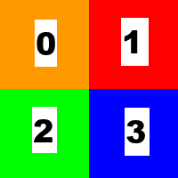

The 24 Canucks
Posted on Oct 23, 2018 in digital image processing
A question before we start: is Pavement the greatest band ever?
A difficult question, sure, but one we have to answer somehow. And, of course, the answer is:
Quite possibly, yes.
Now that we've got this extensive discussion out of our systems, let's talk about how we swap regions of an image using the OpenCV library. Let's call it... The Swapper.
Writer's note: I've watched The Player recently and this title is my terrible homage to this great movie.
Here's what the user can do with it:
- Open an image from his file system;
- Randomly swap the quadrants of the image;
- Swap the quadrants of the image selecting a personalized layout configuration;
- Restore the original image;
- Save a new image with one of the operations applied.
You can see The Swapper in action below:

To develop this application, we need to know a little about the ArrayList class and the concatenation of Mat objects with the OpenCV library. There's a lot of different ways to swap the regions. I've chosen this one for The Swapper for no particular reason.
The odd image problem
Before we talk about changing regions of the image, we must solve an improbable, but possible problem. What if our image has an odd number of rows or columns? This would mean that the regions would not have the same amount of pixels with the division of the quadrants. Such situation can make the swap more difficult. To make things simpler, we first check if the image has an odd number of rows or columns and, if that's the case, we add a padding to make sure that everything is even.
As you can see below, we do this with the copyMakeBorder() method:
/** Adding padding to the image if there's an odd number of rows and/or columns */
if (currentImage.rows() % 2 != 0) Core.copyMakeBorder(currentImage, currentImage, 1, 0, 0, 0, 0);
if (currentImage.cols() % 2 != 0) Core.copyMakeBorder(currentImage, currentImage, 0, 0, 1, 0, 0);
Respecting the user's choice
In our application, we have two ways to choose how to swap the regions of the image: one is random and another is doing it ourselves. In both cases, we will fill an ArrayList object named regions with numbers from 0 to 3 where each one represents one region and its position reflects the quadrant where we want to put the region. Take a look at the picture below:
The numbers can be seen as the regions in the ArrayList object and the squares are the quadrants. If we have a regions object with elements (1, 0, 2, 3), we're swapping the content of the regions in the upper half of the image.
To perform a random swap, we add 0, 1, 2 and 3 to regions and then shuffle it with the shuffle() method from the Collections class to get a random order.
In the other case, we only need to check if the user's input is valid and get the values to the regions object.
Here's the code to do this part:
/** Creating a List object that contains four numbers, each one to represent one region
* of the image. */
List<Integer> regions = new ArrayList<>(NUMBER_OF_QUADRANTS);
/** Deciding the order of each region on the new image using the user's choice.
* If he chose a random swap, we create a list with numbers from 0 to 3 and put them
* in random order.
* If he chose a personalized swap, we first check if he chose the same region more
* than once. Since we want to swap regions, there must not be duplicates.
* If the configurate is appropriate, we create the list of regions from the user's choice.
*/
if (randomSwapConfiguration) {
for (int i = 0; i < NUMBER_OF_QUADRANTS; i++) {
regions.add(i);
}
Collections.shuffle(regions);
} else {
checkSpinners();
getSpinnersValues();
regions.add(firstQuadrantSpinnerValue);
regions.add(secondQuadrantSpinnerValue);
regions.add(thirdQuadrantSpinnerValue);
regions.add(fourthQuadrantSpinnerValue);
}
Choosing the right points
We're going to need five Point objects (origin, middle, lowerLeftCorner, upperRightCorner and lowerRightCorner) to create the four Rect objects, each one with the points, from where we're going to create our Mat[] object with the four regions. Here's how to do this:
/** Defining the points that characterize each region. */
Point origin = new Point(0, 0);
Point middle = new Point(currentImage.cols() / 2, currentImage.rows() / 2);
Point lowerLeftCorner = new Point(0, currentImage.rows());
Point upperRightCorner = new Point(currentImage.cols(), 0);
Point lowerRightCorner = new Point(currentImage.cols(), currentImage.rows());
/** Creating an array of Mat objects to contain the four regions of the image. */
Mat[] imageRegions = new Mat[NUMBER_OF_QUADRANTS];
/** First region: upper left of the image. */
imageRegions[0] = new Mat(currentImage, new Rect(origin, middle));
/** Second region: upper right of the image. */
imageRegions[1] = new Mat(currentImage, new Rect(middle, upperRightCorner));
/** Third region: lower left of the image. */
imageRegions[2] = new Mat(currentImage, new Rect(lowerLeftCorner, middle));
/** Fourth region: lower right of the image. */
imageRegions[3] = new Mat(currentImage, new Rect(middle, lowerRightCorner));
Concatenating the situation
We need to concatenate the elements of the imageRegions object and put together the swapped image at the end. In our case, since there are four quadrants that we're working on, we will first create a List<Mat> object called upperHalfMatList to contain the first two quadrants (upper left and upper right of the image), then concatenate these two together in a Mat called upperHalfImage. Next, we do the same process to the lower quadrants using lowerHalfMatList and lowerHalfImage. To end, we concatenate vertically upperHalfImage and the lowerHalfImage to generate our swapped image in the currentImage object.
Here's how everything comes together:
/** Creating a Mat that contains the upper half of the swapped image. */
Mat upperHalfImage = new Mat();
/** Creating a List<Mat> object that contains the upper half of the swapped image. */
List<Mat> upperHalfMatList = new ArrayList<>(NUMBER_OF_QUADRANTS / 2);
/** Putting the region randomly selected (or selected by the user) on the first quadrant. */
upperHalfMatList.add(imageRegions[regions.get(0)]);
/** Putting the region randomly selected (or selected by the user) on the second quadrant. */
upperHalfMatList.add(imageRegions[regions.get(1)]);
/** Concatenating the upper Mat objects together. */
Core.hconcat(upperHalfMatList, upperHalfImage);
/** Creating a Mat that contains the lower half of the swapped image. */
Mat lowerHalfImage = new Mat();
/** Creating a List<Mat> object that contains the lower half of the swapped image. */
List<Mat> lowerHalfMatList = new ArrayList<>(NUMBER_OF_QUADRANTS / 2);
/** Putting the region randomly selected (or selected by the user) on the third quadrant. */
lowerHalfMatList.add(imageRegions[regions.get(2)]);
/** Putting the region randomly selected (or selected by the user) on the fourth quadrant. */
lowerHalfMatList.add(imageRegions[regions.get(3)]);
/** Concatenating the lower Mat objects together. */
Core.hconcat(lowerHalfMatList, lowerHalfImage);
/** Creating a List<Mat> object that contains the upper and lower halves of the swapped image. */
List<Mat> swappedImageMatList = new ArrayList<>(NUMBER_OF_QUADRANTS / 2);
/** Putting the upper half of the image on the list. */
swappedImageMatList.add(upperHalfImage);
/** Putting the lower half of the image on the list. */
swappedImageMatList.add(lowerHalfImage);
/** Concatenating vertically to create the swapped image. */
Core.vconcat(swappedImageMatList, currentImage);
Booyah! Another cool exercise done with the OpenCV library. By the way, there are 24 combinations that can be done with the permutations, so that's where the post's title came from.